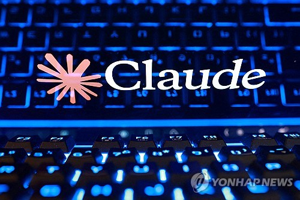
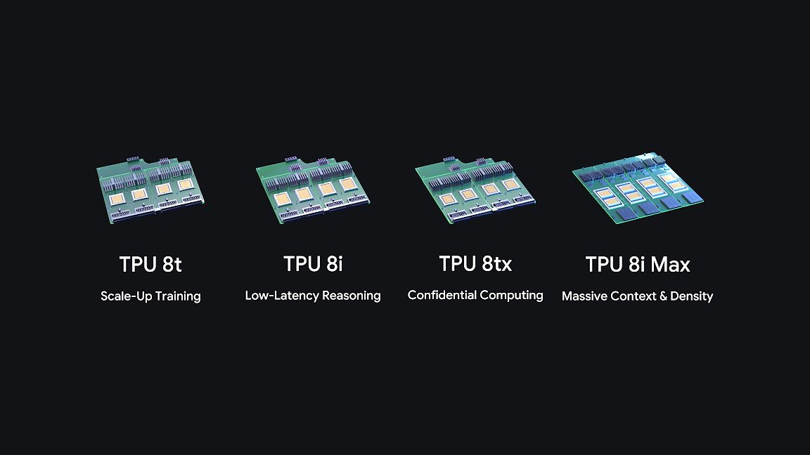
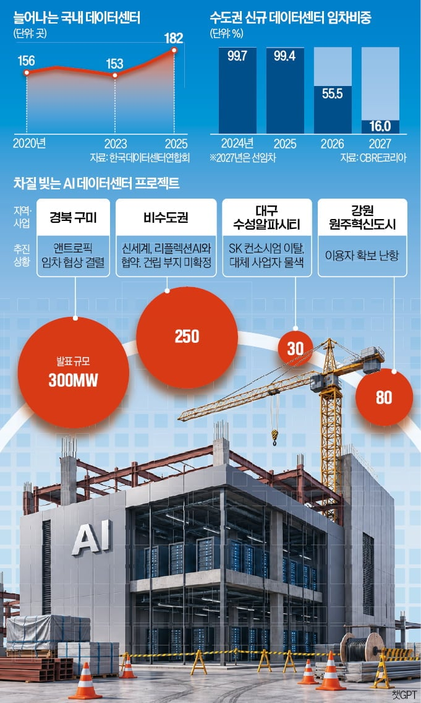
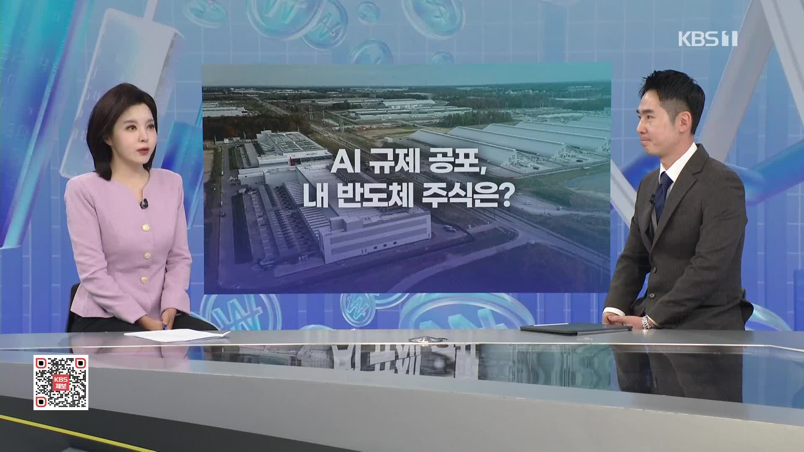

01 · KR
앤트로픽 클로드 개인정보 유출 신고
기업 AI의 기본은 프롬프트보다 데이터 경계선
연합뉴스는 국내 기업이 이용하는 클로드 계정 100여 개와 관련한 개인정보 유출 신고를 다뤘다. 계정 소유권·입력 금지 데이터·로그 접근권·사고 신고 절차를 운영 정책으로 고정할 필요가 커졌다.
원문 보기 ↗ADDIT INSIGHT
기업 AI 도입은 모델 선택과 동시에 계정·데이터·사고 대응 체계를 설계하는 일이다.
클로드 국내 계정 개인정보 유출 신고, 앤트로픽 모델 업데이트, 구글 신형 TPU, 구미 데이터센터 임차 불발, AI 규제·음성 사기 사례로 AI 도입의 운영 조건을 살펴봅니다.
오늘은 어떤 모델이 가장 똑똑한지보다, AI가 실제 조직에 들어올 때 어디까지 허용되고 누가 검수해야 하는지를 점검합니다.
클로드 국내 기업 계정 100여 개 유출 신고, 기업 AI 경계선 재점검
Fable·Mythos와 신형 TPU, 모델·인프라 경쟁 동시 가속
골드만삭스 Claude Code 제한, 직무별 권한 분리 신호
구미 데이터센터 임차 불발, 앵커 고객과 수익성의 현실
AI 규제·음성 사기, 기술 도입의 안전 비용을 키워

기업 AI의 기본은 프롬프트보다 데이터 경계선
연합뉴스는 국내 기업이 이용하는 클로드 계정 100여 개와 관련한 개인정보 유출 신고를 다뤘다. 계정 소유권·입력 금지 데이터·로그 접근권·사고 신고 절차를 운영 정책으로 고정할 필요가 커졌다.
원문 보기 ↗기업 AI 도입은 모델 선택과 동시에 계정·데이터·사고 대응 체계를 설계하는 일이다.

에이전트 시대 작업량을 겨냥한 칩 경쟁
중앙일보는 구글이 AI 에이전트 수요에 맞춰 8세대 TPU 제품군에 8tx와 8i Max를 추가했다고 보도했다. 에이전트가 늘수록 호출량·추론량·지연시간·인프라 비용을 함께 계산해야 한다.
원문 보기 ↗에이전트 도입의 손익계산서에는 모델 가격뿐 아니라 처리량과 지연시간도 들어간다.

전력보다 먼저 확인해야 할 앵커 고객과 수익성
한국경제는 구미 프로젝트에서 앤트로픽 임차가 불발되며 사업화에 난항이 생긴 상황을 보도했다. 부지와 전력만이 아니라 확정 계약·가동률·자금조달·지역 수용성이 함께 검증돼야 한다.
원문 보기 ↗데이터센터 사업계획서 첫 장에는 앵커 고객과 장기 수익성 가정이 있어야 한다.

기술 로드맵에 자본비용·규제 시나리오를 붙이기
KBS는 AI 규제와 금리 인상 우려가 반도체주 변동성으로 이어진 시장 흐름을 다뤘다. AI 투자는 기술 전망만으로 설명되지 않고 규제 일정·자본비용·고객 수요의 변화에 좌우된다.
원문 보기 ↗AI 예산은 낙관 시나리오 하나가 아니라 금리·규제·수요의 세 갈래로 계산하자.
음성 신뢰를 결재 권한으로 착각하지 않기
세이프타임즈는 AI로 CEO·변호사의 목소리를 복제해 기업 송금을 유도한 혐의로 3명이 기소됐다고 보도했다. 음성·영상이 진짜처럼 들리는 시대에는 이중 승인과 콜백 검증이 필요하다.
원문 보기 ↗송금 승인에는 음성만 쓰지 말고 발신자·계좌·콜백을 분리 검증하자.